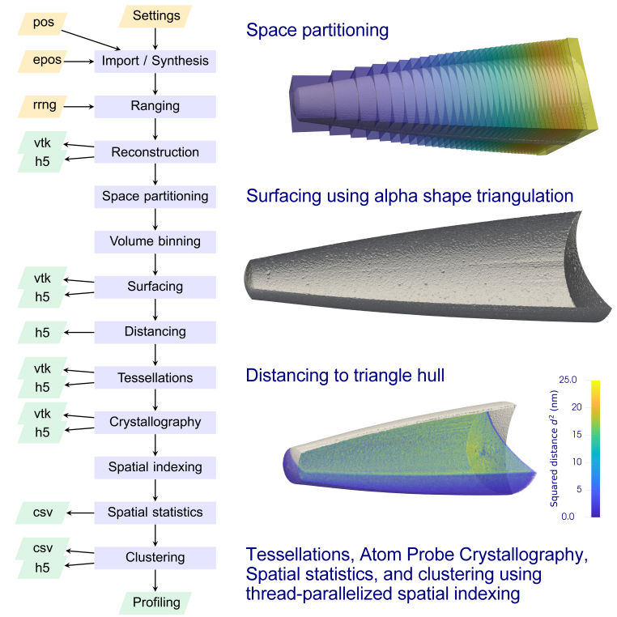

XML Control File Settings¶
The entire data mining is instructed through a single XML control settings file.

Input¶
InputFileformat
Determines where the rawdata come from
1, POS
2, EPOS
3, HDF5
4 Generate synthetic single-crystalline tip
RAWFilenameIn
Specifies the filename and ending for InputFileformat modes 1, 2, 3, and 4
Analysis mode¶
AnalysisMode
1, work in reconstruction space
Reconstruction¶
ReconstructionAlgorithm
Determines the location of the ions in the reconstruction space
1, accept x,y,z from synthetic dataset demands InputFileformat 5
2, accept x,y,z from the POS file as reconstructed already
3, accept x,y,z from the EPOS file as reconstructed already
4, perform common Barr et al. reconstruction based on EPOS file
IdentifyIonType
If other than 0, a ranging is performed based on rrng range file
Else, a default type is assigned to all ions
RRNGFilenameIn
Specifies a RRNG format conformant range file with pieces of information
for mapping mass-to-charge values to ion types (ranging)
Tip surface reconstruction¶
SurfaceReconstructionType
Determines whether or not and if so which tip surface reconstruction model to apply
1, alpha shape using the CGAL library
4, read existent triangle hull from SurfaceFilenameIn file
SurfaceFilenameIn
Specifies a VTK file which contains the surface triangulation
AlphaShapeAlphaValueChoice
CGAL setting to specify which alpha value is used to triangulate the shape
0, the smallest alpha to get a solid through
1, the value which CGAL considers to be the optimal
Analysis Tasks¶
AnalysisCrystallographicInfo
1, perform V. J. Araullo-Peters et al. method to extract
pointwise crystallographic signal by analyzing periodicity
in histogram of projected point to plane distances using
discrete Fourier transforms
Computing the FFT demands linking against the IntelMKL library
AnalysisSpatDistrType
Specifies which descriptive spatial statistics should be computed.
Multiple single character numbers can be provided to instruct
multiple analyses, eg 415 instructs multiple k nearest,
radial distribution function, and 2-point statistics,
The order of the numeral keys does not matter
1, radial distribution function
2, nearest neighbor
3, Ripley K
4, multiple k nearest neighbors
5, 2-point spatial statistics to knearest neighbors in SpatStatRadiusMax
6, discrete ion type specific numeral accounting
AnalysisVolumeTessellation
1, Computes a volume Voronoi tessellation to the entire dataset
AnalysisClusteringType
Specifies which clustering method to use
1, maximum separation method
Barr et al reconstruction parameter¶
Parameter in the Barr et al. reconstruction protocol
FlightLength
In nanometer, instrument dependent
AtomicDensity
In atoms per cubic nanometer
EvaporationField
In Volt per nanometer
DetEffMin
DetEffIncr
DetEffMax
Specifies range of detector efficiency minimum, increment,
maximum values, respectively, physically restricted on (0,1)
KFMin
KFIncr
KFMax
Specifies range of kf field factor minimum, increment, maximum
values, respectively
ICFMin
ICFIncr
ICFMax
Specifies range of image compression factor ICF factor
Smart pruning prior surface reconstruction¶
A technique to identify ions close to the tip surface to avoid downsampling yet speed up the alpha shape surface triangulation
AdvIonPruningBinWidthMin
AdvIonPruningBinWidthIncr
AdvIonPruningBinWidthMax
Specifies, in nanometer, the cuboidal binning of the tip volume used
for pruning all ions too far away from the tip surface prior to passing
the candidate points to CGAL
Values should not be smaller than 0.5 nanometer, much larger values will
reduce pruning efficiency
DebugComputeDistance
0 no distance computation to tip surface triangle hull,
will introduce bias in spatial statistics and tessellation results
1 floating point exact distancing for all ions within
SpatStatRadiusMax to the tip surface triangle hull, will eliminate bias
owing to ions too close to the dataset boundary whose region of interest
extends into vacuum and therefore contains comparably fewer ions than
for ions deeply embedded in the tip volume
Crystallographic analysis¶
Thread parallelized implementation of V. J. Araullo-Peters et al. reconstruction space crystallographic signal quantification method
CrystalloRadiusMax
Radius of the region of interest inspection sphere about each material point
of a sampling grid at which crystallographic signal is mined by scanning
elevation azimuth space
SamplingGridBinWidthX
SamplingGridBinWidthY
SamplingGridBinWidthZ
Defining a cuboidal sampling point grid whose vertices define positions
in the tip volume where crystallographic signal is mined
ElevationAngleMin
ElevationAngleIncr
ElevationAngleMax
AzimuthAngleMin
AzimuthAngleIncr
AzimuthAngleMax
Defines the resolution of the elevation azimuth angle space scanning about each material point
CrystalloHistM
Defines the power of two exponent of how many projected distance bins are used to compute the histogram
for which subsequently discrete 1d Fourier transforms are computed
WindowingMethod
0, rectangular window
1, Kaiser window, using scalar scaling constant WindowingAlpha
WindowingAlpha
Positive scalar scaling constant see J. Kaiser and R. W. Schafer
IEEE Transactions on Acoustics, Speech and Signal Processing, 28, 1,
1980, 105-107, 10.1109/TASSP.1980.1163349 for details
Descriptive spatial statistics parameter¶
DescrStatTaskCode
A semicolon-separated list of string-based ion type codes which specify which analyses on ion types are to be conducted. Each analysis task, string, requires at least one central ion type string separated by a minus sign to at least one neighboring ion type string. The individual substring keys specify individual analyses, each separated off by semicolon. For example the string code Al-Al;Ga-Ga will instruct two tasks. In the first such descriptive spatial statistics task Al is taken as central and probed against Al only neighbors. The second task probes Gallium against Gallium only. It is possible to combine multiple string codes into a semicolon separated set of arbitrary combinations of single and molecular ions. In this case ion type strings for centrals as well as neighbors are separated through comma. For example, the string code Al,Mn-Al,Mn;AlH-Ga,Mn instructs two tasks: the first accepts Al or Mn as central ions and probes against their Al or Mn neighbors. The second takes all aluminium hydride molecular ions or Gallium single ions as centrals and probes against their Gallium or Manganese neighbors.
SpatStatRadiusMin
SpatStatRadiusIncr
SpatStatRadiusMax
Specifies in nanometer the spherical region of interest radius
in which analyses about the ions are performed.
Increment needs to be an integer multiple of SpatStatRadiusMax
SpatStatKNNOrder
Specifies k for AnalysisSpatDistrType mode 4, output will use
C style reporting i.e. order 1 is reported as 0
SpatStatMKNNCode
Specifies a semicolon separated list of only non-negative integer values
which kth order nearest neighbors should be computed to the central ion,
allows to define arbitrary combinations like 1;2;5;10;100;1000,i.e.
the first, second, fifth, tenth, hundredth, and thousandth nearest neighbor
SpatStatAdditionalLabelRandomization
If set to 1 allows to randomize all ion type labels across point cloud
and re-run the clustering analysis against, otherwise no randomization is done. | Applied randomizations are reset after each task to not invalidate the data set.
Clustering analyses parameter¶
ClusteringTaskCode
Syntax is the same as DescrStatTaskCode, different tasks can be defined.
ClustMaxSepDmaxMin
ClustMaxSepDmaxIncr
ClustMaxSepDmaxMax
Specifies in nanometer the range and stepping of the Dmax parameter used
to perform a set of independent maximum separation clustering analyses
with different Dmax values but same Nmin.
ClustMaxSepNmin
Minimum number of ions inclusive/exclusive to consider a cluster.
ClustAPosterioriSpatStat
If 1 performs a spatial distribution analysis on the clustered ions after
the clustering analysis, this support is in beta stage
Tessellation analyses¶
SurfaceCellsCarvingRadius
This specifies a shell of thickness SurfaceCellsCarvingRadius in nanometer
in which cells are not computed because they are too close to the tip surface
to assure that their geometry is unaffected by the discontinuity of
of the non-periodic finite point cloud
Visualization options¶
If set to value 1 switched on, if set to 0 switched off Some of the output will be written into an HDF5 file. Complementary XDMF files will be written for visualization purposes
IOReconstruction
Write ion positions and ranging information to VTK file
IOTriangulation
Write tip surface triangle hull for visualization
IOTriangulationBVH
Write VTK file which visualizes the bounded volume hierarchy used for fast triangle location queries
IOKDTreePartitioning
Write VTK file that visualizes the aggregate of thread local KDTrees into which the ions were partitioned
IOHKFilteredIons
Write candidate ion positions and ranging information to VTK file
IOHKClusterID
Write smart pruning bin information to binary file, unsigned int x+yNX+zNXY implicitly encoded
IOIonTipSurfDistances
Write distance of ions to surface to VTK file
IOVoronoiDescrStats
Report volume and number of faces of each tessellation cell in HDF5 file but not their geometry
IOVoronoiCellPositions
Report 3D positions of each Voronoi cell linked to cell attributes
IOVoronoiTopoGeom
Report also the topology and geometry of every cell.
Mind that this takes approximately 100 Byte per cell, i.e.
the option may not be feasible to use when working with large tip volumina
as it will generate Terabyte sized results files!
IOCrystallography
Report results of V. J. Araullo-Peters method of extracting crystallographic signal
Synthetic tip¶
Parameter specifying geometry and size of synthetic tip. Shape is conical frustum with spherical cap on top and spherical cap cut out at the bottom. So far the support for tip geometry is simplistic defining hardcoded single-crystalline pure Al tip with optional monodisperse Al3Sc precipitate fraction.
SimRelBottomRadius
SimRelTopRadius
SimRelBottomCapHeight
Only frustum height
**SimRelTopCapHeight**https://
All four relative to frustum height ie. restricted on 0,1
SimMatrixLatticeConstant
Currently aluminium single-crystalline pillar.
SimNumberOfAtoms
How many ions assuming full efficiency.
SimDetectionEfficiency
Fraction of NumberOfAtoms to place, sampling randomly MersenneTwister
SimFiniteSpatResolutionX
SimFiniteSpatResolutionY
SimFiniteSpatResolutionZ
Sigma parameter of normal distribution about lattice position by means of which ion is displaced about ideal position, in nanometer
SimNumberOfCluster
How many Al3Sc cluster to place in bounding box about the tip
SimClusterRadiusMean
SimClusterRadiusSigmaSqr
Lognormal distribution parameter NOT expectation value and variance for cluster size distribution, currently all cluster same size mean, in nanometer
Performance¶
UseNUMABinding
Optional feature. The suggestion is to switch it off by default, i.e. set any value other than 1. Instead, if switched on 1, it will instruct to use the NUMA API library to pin the threads to specific cores at runtime. This is not per se not portable across different machine topologies. Users need to inspect their machine topology first (using hwloc for instance) and modify the corresponding section in the source code.